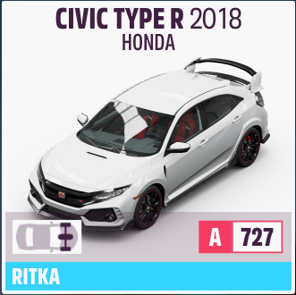

| legjobb ebben az osztályban | milyen terep | autó neve |
|---|---|---|
| S2 osztály | Gyorsulási versenyek | Lamborghini Diablo GTR |
| S2 Osztály | Országuti versenyek | Lamborghini Sesto Elemento Forza Edition |
| S2 Osztály | Országuti versenyek, Drift | Hoonigan Ford ‘Hoonicorn’ Mustang 1965 |
| S2 Osztály | Országuti versenyek, Végsebesség | Koenigsegg Jesko 2020 |
| S1 Osztály | Országuti versenyek | Ford Supervan 3 1994 |
| S1 Osztály | Végsebesség | Porsche Taycan Turbo S 2020 “Welcome Pack” |
| A Osztály | Off-road | #2069 Ford Bronco R 2020 “Welcome Pack” |
| A Osztály | Rally | Mitsubishi Lanser Evolution GSR 2008 “Welcome Pack” |
| B Osztály | Off-road | Exomotive Exocet Off-road 2018 |
| B Osztály | Országuti versenyek | Honda Type R 2016 |
| C Osztály | Országuti versenyek | Dodge Charger R/T 1969 |
| C Osztály | Országuti versenyek | Mini John Cooper Works 2009 |
| D Osztály | Országuti versenyek | BMW Isetta 300 Export 1957 |
| D Osztály | Országuti versenyek, Off-road | Ford Super Duty F-450 DRW Platinum 2020 |
| D Osztály | Országuti versenyek, Off-road | Peel Trident 1965 |